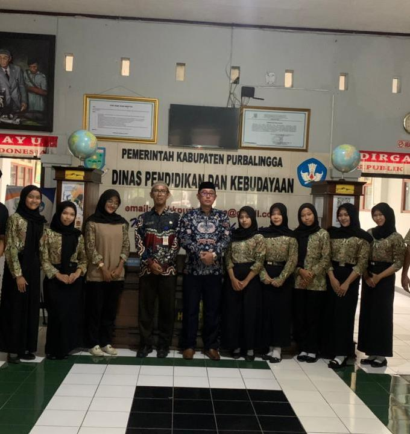
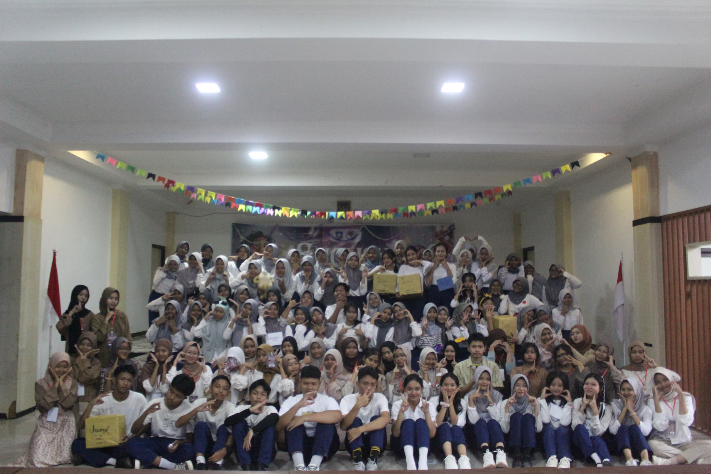
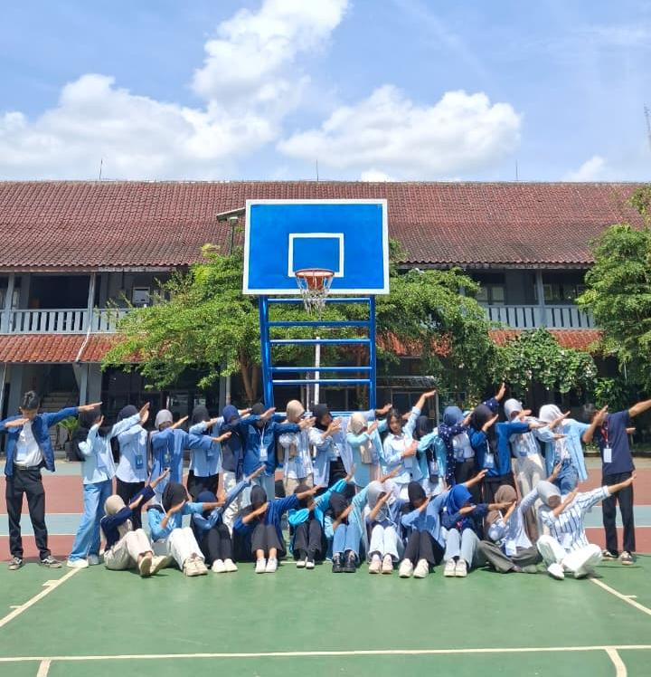

Profil
Nama
Dina Nur Aini
Jurusan
Akuntansi Keuangan
TTL
Purbalingga, 21 Januari 2008
Pendidikan
SD: MI MA Arif NU Rabak
SMP
SMPN 2 Kalimanah
SMK
SMKN 1 Purbalingga
Tentang Saya
Lulusan SMK Akuntansi dan Keuangan Lembaga yang memiliki semangat tinggi untuk berkembang di bidang administrasi, customer service, digital marketing, dan bisnis. Berpengalaman dalam pelayanan pelanggan, pengelolaan usaha mandiri, serta pembuatan konten digital yang berorientasi pada kebutuhan pasar.
Memiliki kemampuan komunikasi yang baik, mampu bekerja secara individu maupun tim, serta terbiasa menghadapi lingkungan kerja yang dinamis. Dengan kombinasi keterampilan administratif, kreativitas digital, dan pemahaman terhadap kebutuhan pelanggan, saya siap memberikan kontribusi positif dan menciptakan nilai bagi perusahaan maupun bisnis yang saya dukung.
Keahlian Utama
💻 Microsoft Office
Excel, Word, PowerPoint
🤝 Pelayanan Pelanggan (Customer Service)
💰 Kasir dan Pengelolaan Transaksi
📱 Pengelolaan Media Sosial
🎨 Pembuatan Konten Kreatif (Canva)
🎥 Live Selling dan Product Presentation
🎤 Komunikasi dan Public Speaking
📈 Manajemen Operasional Bisnis
👥 Kerja Sama Tim dan Kepemimpinan
Pengalaman Kerja
💰 Pelayanan dan Kasir
Pencapaian:
- Mampu menangani transaksi dengan cepat dan akurat.
- Menjaga kepuasan pelanggan melalui pelayanan yang ramah dan responsif.
🏪 Bisnis Owner Pribadi
Pencapaian:
- Memahami alur bisnis dari hulu ke hilir.
- Mampu mengambil keputusan operasional secara mandiri.
📱 Pengelolaan Media Sosial
Pencapaian:
- Meningkatkan engagement melalui konten yang informatif dan menarik.
- Membangun komunikasi yang baik dengan audiens ataupun pelanggan.
🎨 Konten Kreatif dan Desain
Pencapaian:
- Menghasilkan desain promosi yang menarik dan mudah dipahami.
- Mendukung kreativitas pemasaran digital secara efektif.
🎥 Live Selling
Pencapaian:
- Meningkatkan minat beli pelanggan melalui presentasi produk yang menarik.
- Menciptakan interaksi aktif selama sesi live berlangsung.
Pengalaman & Nilai Profesional
🏢 Pengalaman Organisasi
Committee Aktif English Club
- Berpartisipasi dalam perencanaan dan pelaksanaan berbagai program organisasi.
- Berkolaborasi dengan anggota tim dalam kegiatan edukatif dan kompetitif.
- Mendukung pengembangan kemampuan bahasa Inggris anggota.
- Melatih kemampuan komunikasi, kerja sama tim, dan kepemimpinan.
⭐ Nilai Profesional
- Disiplin dan bertanggung jawab.
- Cepat belajar dan mudah beradaptasi.
- Berorientasi pada pelayanan dan kepuasan pelanggan.
- Mampu bekerja di bawah tekanan.
- Memiliki inisiatif dan semangat untuk terus berkembang.
- Berkomitmen memberikan hasil kerja yang maksimal.
Galeri

Ini kue buatan saya

